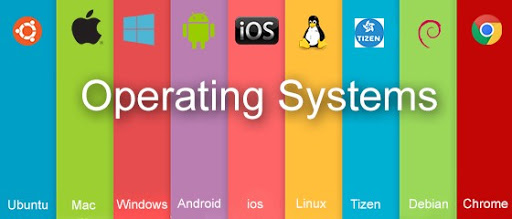

|
|
OPERATING SYSTEM TYPES  Types of Operating System |
Operating systems are there from the very first computer generation and they keep evolving with time. In this chapter, we will discuss some of the important types of operating systems which are most commonly used. Batch operating system The users of a batch operating system do not interact with the computer directly. Each user prepares his job on an off-line device like punch cards and submits it to the computer operator. To speed up processing, jobs with similar needs are batched together and run as a group. The programmers leave their programs with the operator and the operator then sorts the programs with similar requirements into batches. Time-sharing operating systems Time-sharing is a technique which enables many people, located at various terminals, to use a particular computer system at the same time. Time-sharing or multitasking is a logical extension of multiprogramming. Processor's time which is shared among multiple users simultaneously is termed as time-sharing. Distributed operating System Distributed systems use multiple central processors to serve multiple real-time applications and multiple users. Data processing jobs are distributed among the processors accordingly. Network operating System Examples of network operating systems include Microsoft Windows Server 2003, Microsoft Windows Server 2008, UNIX, Linux, Mac OS X, Novell NetWare, and BSD. Real Time operating System There are two types of real-time operating systems. - Hard real-time systems -Soft real-time systems |
|